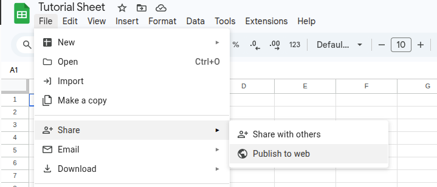
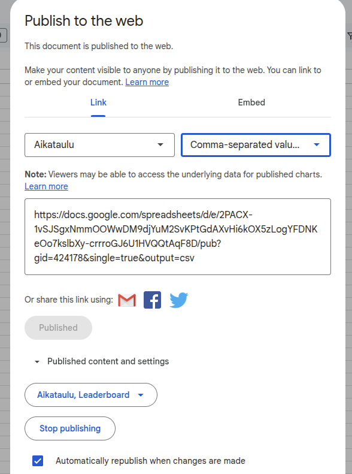
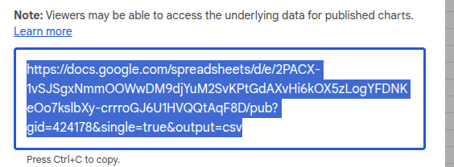
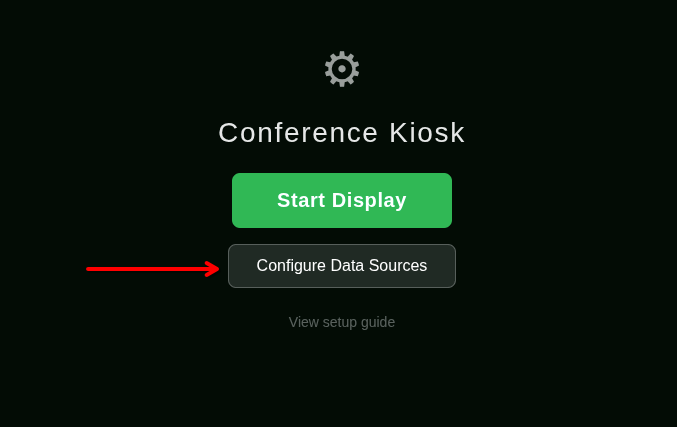
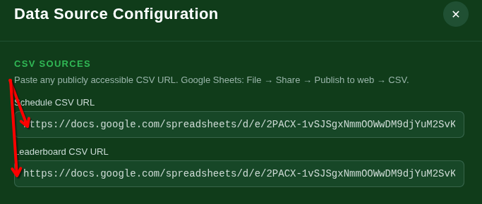
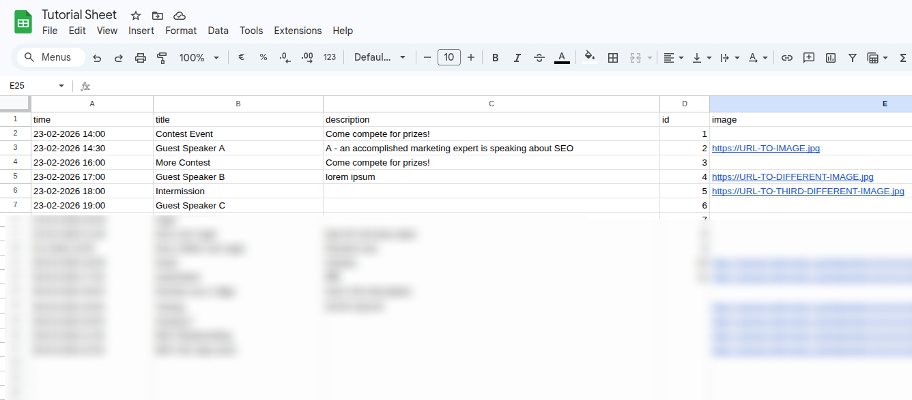
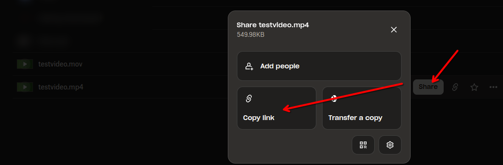
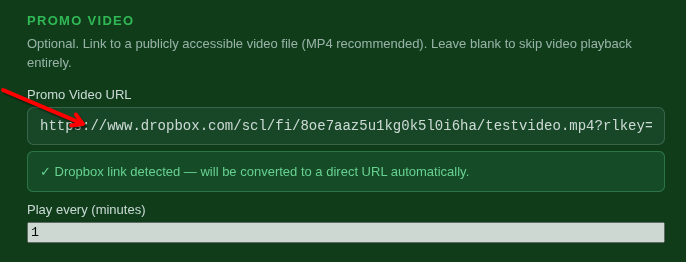
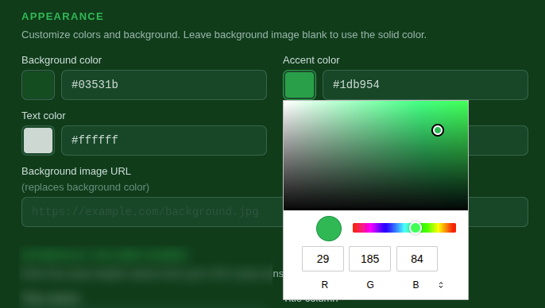
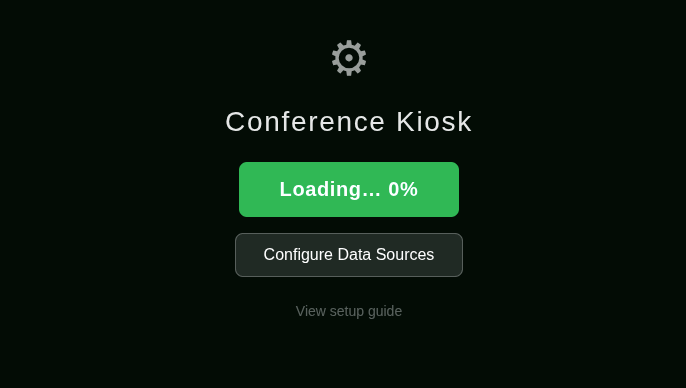

How it works
The kiosk reads live data from two Google Sheets CSVs — one for the event schedule and one for the leaderboard. It cycles automatically between panels, plays a promo video on a timer, and refreshes data every 30 seconds without any interaction needed.
Prepare your Google Sheets
Set up a schedule sheet and a leaderboard sheet, then publish them as CSV so the kiosk can read them.
Configure data sources
Paste the CSV URLs and map your column names in the settings panel.
Start the display
Hit Start Display. The kiosk preloads assets and runs hands-free from there.
Publishing your sheets as CSV
The kiosk fetches data from publicly published CSV exports. Your sheet doesn't need to be shared with anyone — publishing to web is separate from sharing.
Open File → Share → Publish to web
In your Google Sheet, go to File → Share → Publish to web.

File → Share → Publish to webSelect the sheet tab and CSV format
In the first dropdown choose the specific tab you want to publish. In the second dropdown choose Comma-separated values (.csv). Then click Publish.

Publish to web dialog — select tab + CSVCopy the URL
After publishing, copy the URL shown. It will look something like:
Repeat for both your schedule sheet and leaderboard sheet.

Copy the published CSV URLOpening the settings panel
From the start screen, click Configure Data Sources to open settings. Once the display is running, you can still open settings by refreshing the page and clicking Configure again — your settings are saved in the browser.
The start screen
When you first open the kiosk you'll see the start screen. Click Configure Data Sources before starting.

Start screen with Configure buttonPaste your CSV URLs
Under CSV Sources, paste the two URLs you copied from Google Sheets — one for the schedule, one for the leaderboard.

CSV Sources section in settingsMapping your schedule sheet
Tell the kiosk which column names to look for in your schedule sheet. The defaults match the table below — if your sheet uses different names, just update them in settings.
| Setting name | Default column | Description |
|---|---|---|
| Time column | time | Date and time of the event. Accepts most formats: 14:30, 25.6.2025 14:30, 2025-06-25 14:30 |
| Title column | title | Event name shown on the left side of the display |
| Description column | description | Text shown in the right side panel. HTML tags are supported. |
| Image URL column | image | A direct URL to an image shown alongside the description. Dropbox share links are converted automatically. |
| ID column | id | Optional internal identifier. Not displayed. |
| Upcoming events to show | 3 | How many upcoming events to list on the left side. The list fades towards the bottom. |
Example sheet layout
Your schedule sheet should have one row per event with at minimum a time and title column. Extra columns are ignored.

Example schedule sheet in Google SheetsMapping your leaderboard sheet
The leaderboard sheet needs a name (either one full-name column, or separate first + last columns), a company, and a score.
| Setting name | Default column | Description |
|---|---|---|
| Full name column | blank | Use this if your sheet has a single combined name column. Leave blank if using first + last. |
| First name column | first | Used together with Last name when names are in separate columns. |
| Last name column | last | Used together with First name. |
| Company column | company | Organisation or team name shown below the participant's name. |
| Score column | score | Numeric score. Must be a plain number. |
| Sort order | Ascending | Ascending = lowest score first (e.g. golf). Descending = highest score first. |
| Rows to display | 5 | How many rows to show on screen at once. |
FILTER formula to pull only selected columns from a private sheet into a published one — this way you can publish name and score without exposing other sensitive data.Filtering from a private sheet (Finnish locale)
If your participant data is in a sheet called Kilpailijat and you only want to expose certain columns, put this formula in cell A1 of a new published sheet:
Adjust the column references to match where your data lives. The \ separator is for Finnish locale — use , if your locale is set to US/English.
Setting up the promo video
The kiosk can play a fullscreen promo video on a repeating timer. The video plays automatically and returns to the schedule view when it ends.
Upload to Dropbox
Upload your video file to Dropbox and click Share → Copy link. You'll get a URL ending in ?dl=0. Paste it as-is — the kiosk converts it to a direct link automatically.

Dropbox share link dialogPaste into settings and set the interval
Paste the Dropbox URL into Promo Video URL and set how often it should play under Play every (minutes). Leave the URL blank to skip video playback entirely.

Promo video settings fields.mov files only play reliably in Safari. If your source is a .mov, convert it first: ffmpeg -i input.mov -c copy output.mp4Customising colors and background
The Appearance section in settings lets you change the four theme colors and optionally replace the solid background with an image.
| Setting | Default | Affects |
|---|---|---|
| Background color | #03531b | Main background of the display |
| Accent color | #1db954 | Buttons, highlights, section labels |
| Text color | #ffffff | All primary text |
| Subtitle text color | #022f10 | Event time subtitles |
| Background image URL | blank | Replaces background color when set. Dropbox links are converted automatically. |
| Logo image URL | blank | Image used in the scrolling side ribbons. Leave blank to hide ribbons. |
Color pickers
Each color has a visual swatch and a hex text field that stay in sync. You can click the swatch to use a color picker, or type a hex value directly. Changes apply the moment you click Save & Close.

Appearance section with color pickersStarting the display
Once your settings are saved, click Start Display from the start screen. The kiosk will preload your assets and then run automatically.
Preloading
The Start Display button shows a loading percentage while it downloads the promo video and any images referenced in your schedule. On subsequent loads after a normal refresh, cached files load instantly.

Start button showing loading progressThe running display
The left side shows upcoming events. The right side cycles between the leaderboard and event info panels every 15 seconds. The promo video plays at your configured interval. All data refreshes automatically in the background.
Changing settings while running
Refresh the page to get back to the start screen, then click Configure Data Sources. Your previous settings will still be there. After saving, click Start Display again.